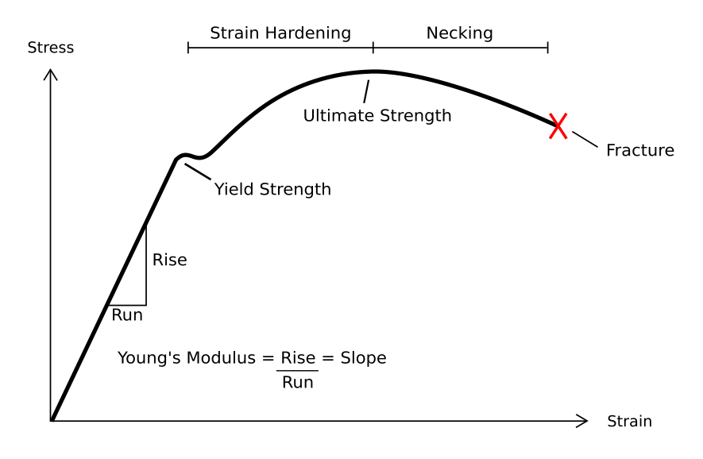
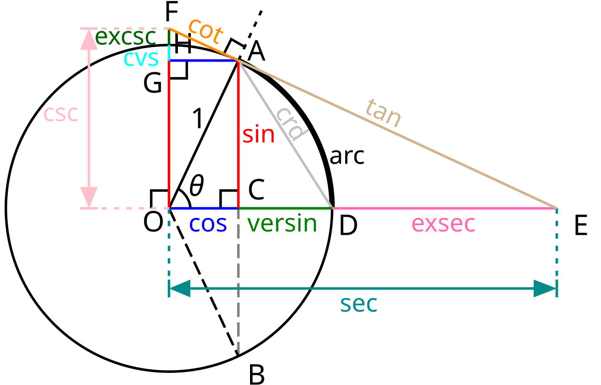

transformations revision 9576
__NOTOC__
Introduction
In engineering, deformation refers to the change in size or shape of an object. Displacements are the absolute change in position of a point on the object. Deflection is the relative change in external displacements on an object. Strain is the relative internal change in shape of an infinitesimally small cube of material and can be expressed as a non-dimensional change in length or angle of distortion of the cube. Strains are related to the forces acting on the cube, which are known as stress, by a stress-strain curve. The relationship between stress and strain is generally linear and reversible up until the yield point and the deformation is elastic. The linear relationship for a material is known as Young's modulus. Above the yield point, some degree of permanent distortion remains after unloading and is termed plastic deformation. The determination of the stress and strain throughout a solid object is given by the field of strength of materials and for a structure by structural analysis.

Depending on the type of material, size and geometry of the object, and the forces applied, various types of deformation may result. The image to the right shows the engineering stress vs. strain diagram for a typical ductile material such as steel. Different deformation modes may occur under different conditions, as can be depicted using a deformation mechanism map.
Permanent deformation is irreversible; the deformation stays even after removal of the applied forces, while the temporary deformation is recoverable as it disappears after the removal of applied forces. Temporary deformation is also called elastic deformation, while the permanent deformation is called plastic deformation.
Dividing
Nonreversible
Cutting has been at the core of manufacturing throughout history. For metals many methods are used and can be grouped by the physical phenomenon used. It is the process of producing a work piece by removing unwanted material from a block of metal, in the form of chips.
Every method has its limitations in accuracy, cost, and effect on the material. For example, heat may damage the quality of heat treated alloys, and laser cutting is less suitable for highly reflective materials such as aluminum. Laser cutting sheet metal produces flat parts and etches and engraves parts from complex or simple designs. It is used over other cutting options for its quick process and customizable abilities.
- Chip forming (material removal processes): Sawing, Drilling, Milling, Turning, Machining, tapping, hobbing
- Shearing: Punching, Stamping, Scissoring, Shaping, Blanking, Tearing, Cutting, Scoring, Wire stripping
- Abrasive material removal: Grinding, Lapping, Polishing, Water jet cutting, Sharpening
- Heat: Flame cutting, Plasma cutting, Laser cutting, Smelting
- Electrochemical: Cupellation, Electrical discharge machining (EDM), Electrochemical machining (ECM), Photoresist etching, Rust removal, Washing, Rinsing, Ultrasonic cleaning
Reversible
- bolting, screwing, latching, buttoning, snapping, wrapping, plugging, pinning, clipping, spin drying
Joining
Nonreversible
These transformations modify the component materials in ways which cannot be reversed without at least one additional process step and / or materials.
- Bonding: glueing, welding, brazing, melting, alloying, deposition
- Molding: casting, injection molding, rotational molding, vacuum forming
- Deformation: nailing, riveting, stapling, crimping
- Encasement: coating, painting, potting, shrink wrapping, wood sealing
- Lithographic: screen printing, photopolymer printing, intaglio printing, relief printing
Reversible
- bolting, soldering, taping, screwing, latching, wrapping, binding, snapping, buttoning, pinning, wire wrapping, plugging, clipping, zippering, tying, press fitting, twisting
Forming
<youtube>aEatTMQsGtg</youtube>
Nonreversible
Reversible
Data transformation
In computing, Data transformation is the process of converting data from one format or structure into another format or structure.

Wikipedia: Unit circle" loading="lazy">Coordinate systems
- Cartesian -> Polar:
- Cartesian -> Hyperbolic:
Locality preserving
- 2D -> 1D: Control code generation using space filling curves like the Hilbert curve
- 3D -> 2D: 3D model slicing
Solid Geometry
- union
- difference
- fillet
- scale
- rotate
- translate
- mirror
- offset
- minkowski sum
- hull